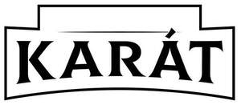

Trade Mark Journal No.2025/028 11 July 2025
UK00004203557 14 May 2025 (29,30,31)
Mark 1

Mark 2
- Class 29
- Snack foods based on nuts and seeds; prepared and processed nuts and seeds; nut and seed based food; nut and seed based snack bars; fruit and nut based snack bars; nut based food bars; prepared seeds; prepared sunflower seeds; milk, cheese, butter, yogurt and other milk products; edible oils and fat; sunflower oil; spiced, roasted, flavoured and candied nuts; nut based butters and spreads; seed based butters and spreads; nut, seed and vegetable based milks, cheeses and dairy substitute products; processed fruits, fungi, vegetables and pulses; prepared meals, convenience food and savoury snacks; edible nuts and seeds.
- Class 30
- Convenience food and savoury snacks; salts, seasonings, flavourings and condiments; coated nuts and seeds; chocolate coated nuts and seeds; sauces containing nuts and seeds; gingerbread nuts; confectionary snack bars; snack bars containing nuts and or seeds; sandwich spreads made from nuts or chocolate and nuts; snack bars; cereal and energy bars; chocolate drink preparations with nuts and or seeds; cereal, energy and nut bars; pastries, biscuits and cakes; pastries, biscuits and cakes containing nuts and or seeds; breakfast cereals; breakfast cereals containing or comprising nuts and or seeds; breads; chocolate; ice cream, sorbets and other edible ices; sugar, honey, treacle; yeast, baking-powder; salt, seasonings, spices, preserved herbs; vinegar, sauces and other condiments; ice (frozen water).
- Class 31
- Fresh fruit, nuts, vegetables and herbs; raw and unprocessed grains and seeds; sunflower seeds.
Monolith (UK) Service Limited
Representative: Marks & Clerk LLP